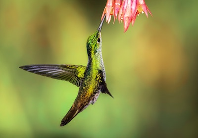

画像の右側にテキストを流し込みます。
花の蜜を主食としており、ホバリングで空中で静止しながら、花の中にクチバシをさしこみ、蜜を吸うという独特の食事の取り方をする（他に昆虫も食べる）。花の蜜を吸うためにクチバシは細長い形状をしている。そのため、昆虫であるスズメガが生息する地域では、成虫の動作が酷似するため、しばしば両者を見間違うことがある。 同様な例として、90度近く湾曲したクチバシをもつカマハシハチドリ Eutoxeres aquila と、バショウ科ヘリコニア属の花とのペアが挙げられる。（ウィキペディアより）